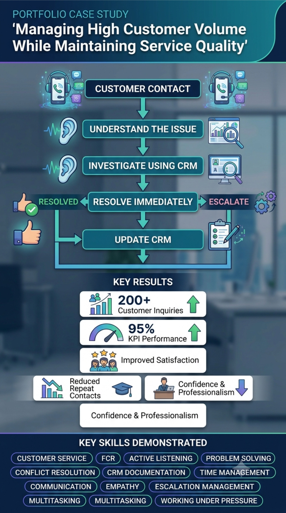

About me
I am a customer support professional with experience in customer service, remote sales, and customer success. I specialize in resolving customer issues, managing customer relationships, handling CRM updates, and communicating effectively across multiple digital platforms. I enjoy helping businesses improve customer satisfaction through excellent service and efficient support.
Work Experience
Customer Sales Representative @Trading Academy | Remote | July 2026 - Present
Customer Service Representative @iSON Xperiences | Kwara | March 2026 - July 2026
Community Moderator @Ancestors | Remote | October 2022 - November 2023
Customer Sales Representative @Micon Innovation & Design | Kwara | Ferbruary 2021 - August 2022

Case Studies
Study 1
Building Trust With Skeptical Customers.Situation
Many prospects believed the crypto education program was a scam before hearing the full offer.Task
Educate prospects while building trust and handling objections professionally.Action
Listened to customer concerns, explained the educational program, shared my LinkedIn profile when appropriate to establish credibility, answered questions honestly without pressuring the customer.Result
Many skeptical prospects stayed engaged in conversation, several booked discovery calls, and some eventually converted into paying customers.Study 2
Managing High Customer VolumeSituation
Many customers were frustrated with a wide range of issues, including account inquiries, service disruptions, billing concerns and technical problem.Task
Managing a large number of customer interactions, accurately document each case, meet productivity and quality KPIs, and ensure customers felt heard and supported-all while working under pressure.Action
Listened actively to understand customer concerns, remained calm and empathetic, Used internal knowledge bases and CRM tools to investigate customer accounts and identify root cause of issue, Resolved issues during the first interaction whenever possible and also empowering customer with information on how to resolve in case of next time to prevent call-back, updated customer records accurately after interaction, Prioritized urgent cases across all interactions.Result
Successfully resolved 200+ customer inquiries, Maintained an overall 95% KPI performance score, improved customer satisfaction by providing timely, accurate and preventive measures, Built confidence in handling high presure situations while maintaining professionallism and attention to detail.What I do
Processes, KPI and Samples.
Process Documentation
Customer contacts support
↓
Identify issue
↓
Verify account
↓
Troubleshoot
↓
Resolve
↓
Escalate if needed
↓
Document in CRM
↓
Follow-up
↓
Close ticket
KPI Dashboard
✓ 200+ Customer Issues Resolved
✓ 250+ Daily Outreach Activities
✓ 95% KPI Achievement
✓ Multi-platform Customer Engagement
✓ Remote Team Collaboration
✓ Sales Calls Booked Weekly.
Customer Support Samples
Sample 1: Payment Limitation
Customer
> I can only pay using UPI. Do you accept that?Response
> Thank you for asking. At the moment, UPI isn't one of our available payment methods. The currently supported payment option is cryptocurrency. I understand this may be inconvenient. If additional payment methods become available in the future, I'd be happy to let you know.Skills Demonstrated
Professional and Clear Communication Expectation Management ProfessionalismCustomer Support Samples
Sample 1: Handling a Frustrated Customer
Customer
> I'm unable to access the internet for over an hour. This is ridiculous!Response
> Hi! I'm sorry you're experiencing this issue, and I understand how frustrating it must be. Let me help you get this resolved as quickly as possible. Could you please confirm the phone number associated with your account? Once I verify your details, I'll guide you through the next steps or reset your network line if necessary.Skills Demonstrated
Empathy Active Listening Problem Solving Professional Communication.Skills
Skills I possess
Core Skills
Customer Support Assistance, Email Support, Critical Thinking, Dataset Validation, AI Workflow Support, Customer Experience, Report Preparation, Annotation Quality, Administrative Support, Attention to Detail, Multi-channel Outreach, Strong Communication, Team Collaboration, Live Chat Support, Active Listening, Customer Retention, Financial Record, Customer Service, Sales Assistance, Sales Pipeline Management, Follow-up Management, Communication Skills, Customer Success, Conflict Resolution, Data Quality, Time Management, Follow-up Management, CRM Management, Data Entry, Time Management.
Tools & Platforms
Microsoft Teams, Microsoft Word, Google Wprkspace, AI Automation Tools, Financial Documentation Tools, Inventory Records, CRM Systems, Zoom, HubSpot, ZenDesk, Genesys, Salesforce, Slack.
Technical Skills
CRM Systems, HubSpot, Google Workspace, Microsoft Office, Zoom, Microsoft Teams, Slack, Live Chat Support, Email Support, Ticket Management, Data Entry, Calendar Management, AI Tools.
Soft Skills
Customer Communication, Active Listening, Conflict Resolution, Time Management, Empathy, Problem Solving, Organization, Adaptability.
Education
Bachelor of Science (B.Sc.) in Educational Technology
University of Ilorin | 2019 - 2024 .Certifications
Inbound Certification
HubSpot AcademyCustomer Experience & Communication Training
iSON XperiencesVirtual Assistant Certificate
ALX AfricaGet in touch
Strong communicator with excellent problem-solving abilities, attention to detail, and a passion for helping customers succeed.
-
Address
17 Opomalu Road
Ilorin, Kwara State
Nigeria -
Email
ajaoafolabi10@gmail.com -
Phone
(234) 906-669-39780 -
Social